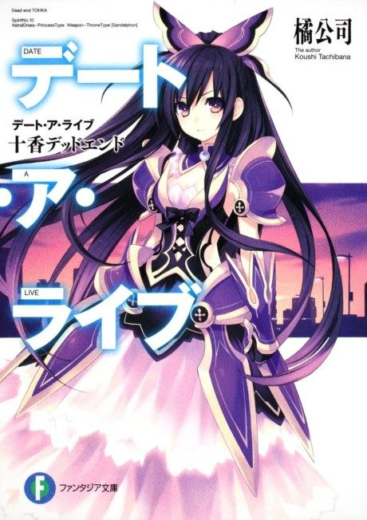
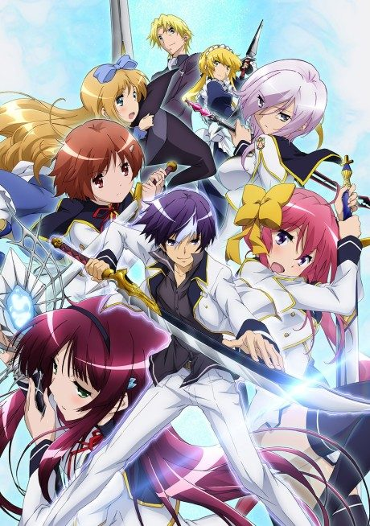

Date A Live
デート・ア・ライブ
Spirits cause devastating spacequakes when they appear. Shidou learns he can seal their powers, but only by making them fall in love with him.
After the anime, read the light novel from Volume 20.
6.8AniList score
—Animeter, no votes yet
58episodes, 5 seasons
Rate it or report where you stopped
Anime finished. Where does the story go next?
Start at Volume20
Date A Live V adapts light novel volumes 17 to 19. Continue from Volume 20.
11922 end
Season 5Start reading here
More like Date A Live
 Unclear6.9
Unclear6.9
 Manga Vol. 116.9
Manga Vol. 116.9
 Done8.1
Done8.1
Manga Ch. 455.3
Taboo Tattoo Manga Ch. 316.7
Manga Ch. 316.7

Unclear6.3 Manga Ch. 1818.4
Manga Ch. 1818.4
 Manga Ch. 577.6
Manga Ch. 577.6
Manga Vol. 46.4
Aria the Scarlet Ammo Original7.3
Original7.3
 Manga Vol. 138.1
Manga Vol. 138.1
 Manga Ch. 1118.0
Manga Ch. 1118.0